<title>Lithophane Lid Recipes</title>
<meta name="claude:viewport-fit-sides" content="cover">
<link rel="stylesheet" href="https://fonts.googleapis.com/css2?family=Archivo:wdth,wght@75..125,400..800&family=Source+Serif+4:opsz,wght@8..60,400;8..60,600&display=swap">
<style>
/* Workshop sheet for one product: the thickness scale first, then the recipes as specimens, then the limits and the test. */
:root {
  --paper: #f3efe7; --ink: #1d1b17; --muted: #6b655b; --line: #d9d2c4; --card: #faf8f3; --accent: #b4532a;
  --display: "Archivo", "Helvetica Neue", Arial, sans-serif; --body: "Source Serif 4", Georgia, serif;
}
@media (prefers-color-scheme: dark) { :root:not([data-theme="light"]) { --paper: #15140f; --ink: #ece7dc; --muted: #a39c8f; --line: #3a362e; --card: #1d1b16; --accent: #f08a5d; color-scheme: dark } }
:root[data-theme="dark"] { --paper: #15140f; --ink: #ece7dc; --muted: #a39c8f; --line: #3a362e; --card: #1d1b16; --accent: #f08a5d; color-scheme: dark }
body { background: var(--paper); color: var(--ink); font: 17px/1.55 var(--body); padding-block: 2.5rem 4rem;
  padding-left: max(16px, env(safe-area-inset-left, 0px)); padding-right: max(16px, env(safe-area-inset-right, 0px)); }
main { max-width: 1120px; margin: 0 auto; display: grid; gap: 2.25rem; }
h1, h2, h3 { font-family: var(--display); text-wrap: balance; margin: 0; }
h1 { font-size: clamp(2rem, 4vw, 2.9rem); font-weight: 800; font-stretch: 90%; letter-spacing: -0.02em; line-height: 1.05; }
h2 { font-size: 1.5rem; font-weight: 700; font-stretch: 95%; }
h3 { font-size: 1.2rem; font-weight: 700; font-stretch: 95%; }
p { max-width: 68ch; margin: 0; }
.lede { font-size: 1.15rem; }
.eyebrow { font-family: var(--display); font-size: 0.75rem; letter-spacing: 0.12em; text-transform: uppercase; color: var(--muted); }
header, .stack { display: grid; gap: 1rem; }
.note { border-left: 3px solid var(--accent); padding-left: 1rem; color: var(--muted); font-size: 0.95rem; }
section { display: grid; gap: 1.4rem; padding-top: 2rem; border-top: 1px solid var(--line); }
figure { margin: 0; display: grid; gap: 0.4rem; min-width: 0; }
figure img { width: 100%; height: auto; display: block; border-radius: 3px; }
figcaption { font-family: var(--display); font-size: 0.8rem; color: var(--muted); }
.recipe { display: grid; grid-template-columns: minmax(0, 1.45fr) minmax(0, 1fr); gap: 1.75rem; align-items: center; padding-block: 1.25rem; border-top: 1px solid var(--line); }
.recipe:first-of-type { border-top: 0; }
@media (max-width: 820px) { .recipe { grid-template-columns: 1fr; } }
.text { display: grid; gap: 0.7rem; min-width: 0; }
.tags { display: flex; flex-wrap: wrap; gap: 0.5rem; font-family: var(--display); font-size: 0.78rem; }
.tag { border: 1px solid var(--line); border-radius: 999px; padding: 0.15rem 0.65rem; color: var(--muted); }
.tag.rec { color: var(--accent); border-color: currentColor; }
dl { display: grid; grid-template-columns: max-content 1fr; gap: 0.35rem 1rem; margin: 0; font-size: 0.95rem; }
dt { font-family: var(--display); font-weight: 600; font-size: 0.82rem; padding-top: 0.12rem; }
dd { margin: 0; color: var(--muted); }
ul { margin: 0; padding-left: 1.2rem; display: grid; gap: 0.45rem; max-width: 68ch; }
li::marker { color: var(--muted); }
.tablewrap { overflow-x: auto; }
table { border-collapse: collapse; width: 100%; min-width: 640px; font-size: 0.93rem; }
th, td { text-align: left; padding: 0.55rem 0.7rem; border-bottom: 1px solid var(--line); vertical-align: top; }
th { font-family: var(--display); font-size: 0.78rem; letter-spacing: 0.06em; text-transform: uppercase; color: var(--muted); font-weight: 600; }
td:first-child { font-family: var(--display); font-weight: 600; white-space: nowrap; }
.two { display: grid; grid-template-columns: repeat(auto-fit, minmax(280px, 1fr)); gap: 1.25rem; }
.card { background: var(--card); border: 1px solid var(--line); padding: 1.1rem 1.25rem; display: grid; gap: 0.5rem; align-content: start; }
.test { display: grid; grid-template-columns: minmax(0, 360px) minmax(0, 1fr); gap: 1.75rem; align-items: center; }
@media (max-width: 720px) { .test { grid-template-columns: 1fr; } }
</style>

<main>
<header>
  <div class="eyebrow">Activity Path Poster · the glowing lid, 25 Oct 2026</div>
  <h1>What glows on the lid, and how much detail it can hold</h1>
  <p class="lede">Nothing on a lithophane glows by itself. The light only sees how thick the plastic is at each point, so every bright and every dark part is a decision we make: which data becomes thin plastic. Below are seven ways to make that decision, rendered at the lid's real size with the printer's layers and the light spreading inside the plastic simulated.</p>
  <p class="note">Assumed: a 93 mm disc on your light with a 77 mm round map, white PLA, a warm LED. The brightness curve is an estimate until the test print at the end of this page measures it. Each image shows the lid switched on (left) and off in daylight (right).</p>
</header>

<section id="picks">
  <div class="stack">
    <div class="tags"><span class="tag rec">Your choice, 25 Oct</span></div>
    <h2>Your two picks, tested on harder routes</h2>
    <p>Contour lines for mountain and hill runs, the city map for city runs. Below, both are drawn at the lid's real scale on five routes, from a 5 km old-town loop to a 33 km city loop. The Uetliberg and city loops are synthetic test routes.</p>
  </div>

  <h3>How the tool picks the design</h3>
  <p>The height range alone does not work. The 33 km city loop rises 256 m because it crosses the Zürichberg, more than enough to look like a hill run. Height range per kilometre separates the five routes cleanly: 20 m per km or more gets contour lines, anything flatter gets the city map. The order form can override it.</p>
  <div class="tablewrap">
  <table>
    <thead><tr><th>Route</th><th>Height range</th><th>Per km</th><th>Design</th></tr></thead>
    <tbody>
      <tr><td>Zermatt trail run, 14 km</td><td>1314 m</td><td>93 m</td><td>Contour lines every 200 m</td></tr>
      <tr><td>Uetliberg hill loop, 11 km</td><td>419 m</td><td>39 m</td><td>Contour lines every 100 m</td></tr>
      <tr><td>Zürich city loop, 33 km</td><td>256 m</td><td>8 m</td><td>City map</td></tr>
      <tr><td>Zürich old town, 5 km</td><td>30 m</td><td>6 m</td><td>City map</td></tr>
      <tr><td>Zürich lakeside run, 11 km</td><td>41 m</td><td>4 m</td><td>City map</td></tr>
    </tbody>
  </table>
  </div>

  <h3>Contour lines: the spacing picks itself</h3>
  <p>The tool chooses a round spacing for each order: 10, 20, 50, 100 or 200 m. It allows at most 12 lines across the map, and keeps lines at least 2 mm apart even on the steepest tenth of the ground, so they never merge. Every fifth line is bolder. Lines are 0.85 mm wide, the thinnest the nozzle prints cleanly.</p>
  <figure>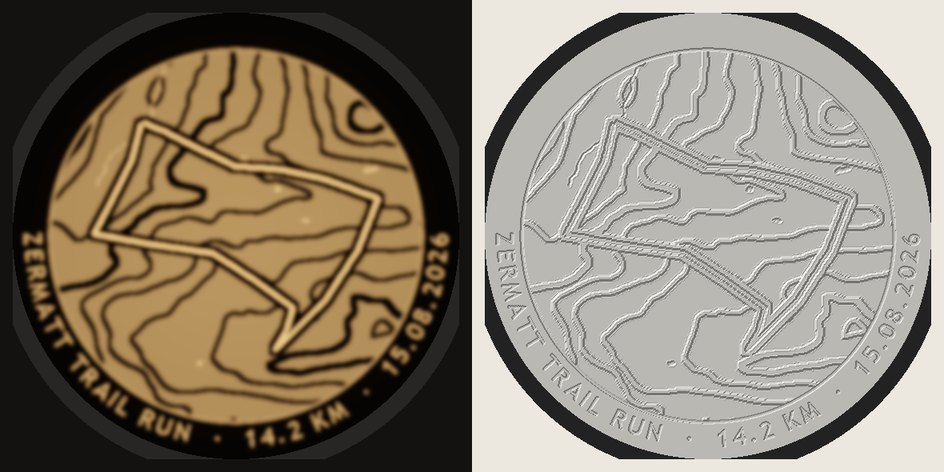<figcaption>Zermatt, chosen spacing 200 m</figcaption></figure>
  <figure>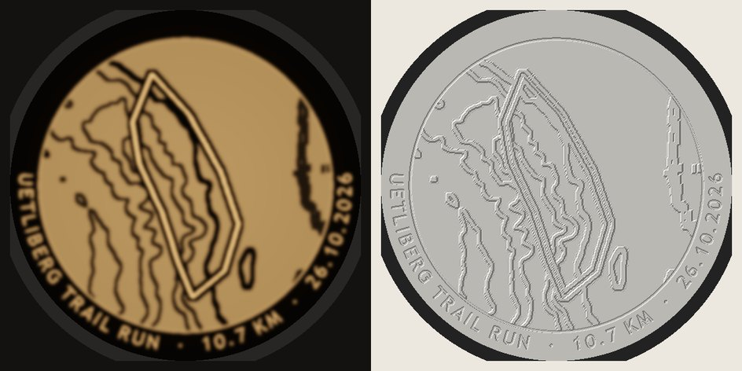<figcaption>Uetliberg, chosen spacing 100 m</figcaption></figure>
  <figure>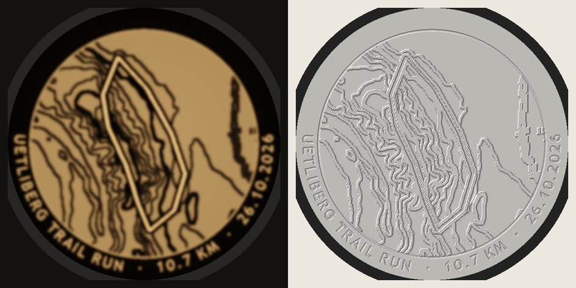<figcaption>Uetliberg forced to 50 m, for comparison: the lines bunch into a dark band on the steep flank. That is what the 2 mm rule prevents.</figcaption></figure>

  <h3>City map: what it shows depends on how much city the route covers</h3>
  <div class="tablewrap">
  <table>
    <thead><tr><th>The lid covers</th><th>Example</th><th>What shows</th></tr></thead>
    <tbody>
      <tr><td>Up to about 2.5 km</td><td>Old town 5 km</td><td>Streets, building blocks, river</td></tr>
      <tr><td>Up to about 5 km</td><td>Lakeside 11 km</td><td>Main and local roads, the lake</td></tr>
      <tr><td>Larger</td><td>City loop 33 km</td><td>Main roads, railway, lake and river</td></tr>
    </tbody>
  </table>
  </div>
  <p>On a lid this size a street is a 0.8 mm line, so beyond about 2.5 km the side streets would merge into a grey patch, and the tool leaves them out. A marathon lid therefore reads as the lake, the river, the big roads and the route. That is honest for the scale, but it is a simpler picture than the old-town lid.</p>
  <figure>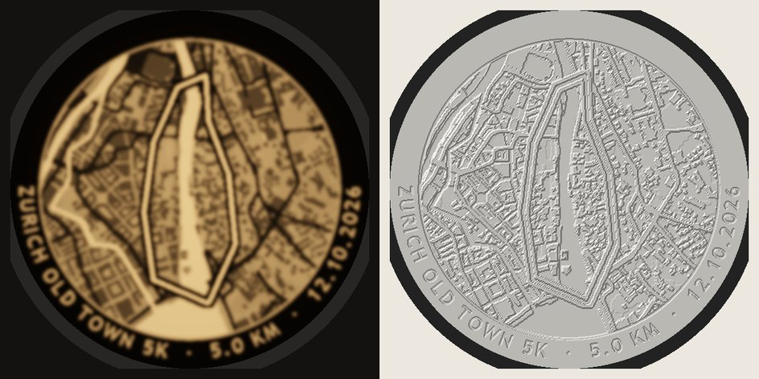<figcaption>Old town 5 km</figcaption></figure>
  <figure>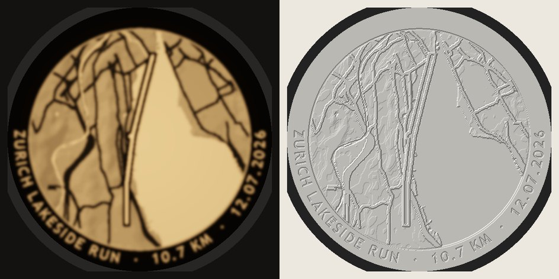<figcaption>Lakeside 11 km, out and back along the shore</figcaption></figure>
  <figure>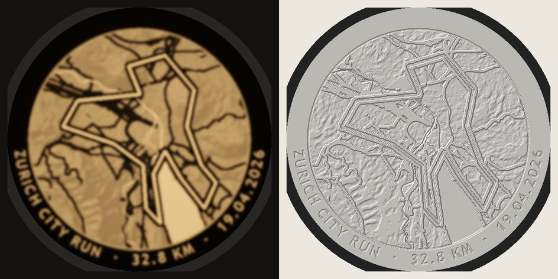<figcaption>City loop 33 km</figcaption></figure>
</section>

<section>
  <div class="stack">
    <h2>Thickness is the only control</h2>
    <p>Light fades quickly as the plastic gets thicker. Most of the tones sit between 0.6 and 2 mm, and past about 2.5 mm it is close to dark. So every recipe works inside that window. 0.6 mm is the brightest we print, because thinner gets fragile and lets the LED show through as a spot. 3 mm is our dark.</p>
  </div>
  <figure>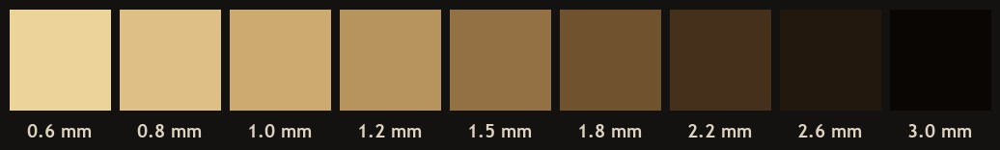<figcaption>Estimated brightness per thickness. The colour comes from your LED and the plastic: a cool LED would glow white instead of amber.</figcaption></figure>
  <p>Some things are the same in every recipe below. Lakes and rivers are thin, so they glow. The route is the thinnest line on the lid, the brightest thing on it, with a dark edge so it stands out. The caption glows out of a dark band around the edge.</p>
</section>

<section>
  <h2>Seven recipes: what becomes thin</h2>

  <div class="recipe">
    <figure>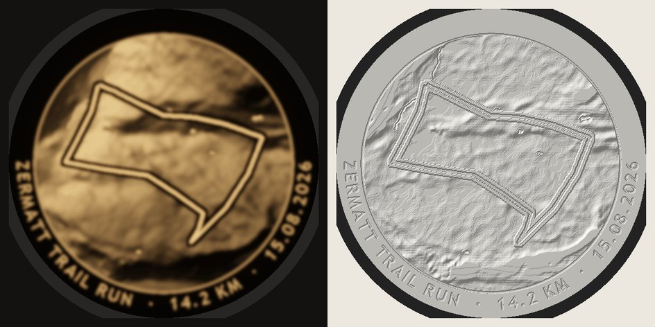</figure>
    <div class="text">
      <h3>1. Shaded terrain with height</h3>
      <dl><dt>Glows</dt><dd>Slopes facing the sun, and the valleys</dd>
      <dt>Dark</dt><dd>Slopes in shadow, and the summits</dd>
      <dt>Off</dt><dd>A white terrain relief, like the poster</dd>
      <dt>Best for</dt><dd>Trail runs, hikes, ski tours, anything with a climb</dd></dl>
      <p>Mostly the shading a map uses to show hills, with some real height mixed in, so the mountains look three-dimensional when lit.</p>
    </div>
  </div>

  <div class="recipe">
    <figure>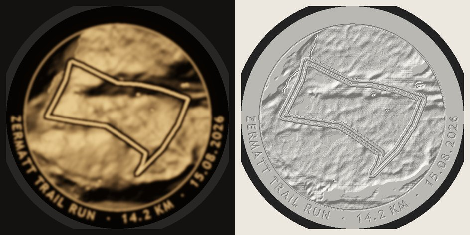</figure>
    <div class="text">
      <h3>2. Shaded terrain only</h3>
      <dl><dt>Glows</dt><dd>Slopes facing the sun</dd>
      <dt>Dark</dt><dd>Slopes in shadow</dd>
      <dt>Off</dt><dd>A textured relief that does not follow the real heights</dd>
      <dt>Best for</dt><dd>The most dramatic 3D look on dramatic terrain</dd></dl>
      <p>The strongest contrast, but a valley and a summit can end up the same brightness.</p>
    </div>
  </div>

  <div class="recipe">
    <figure>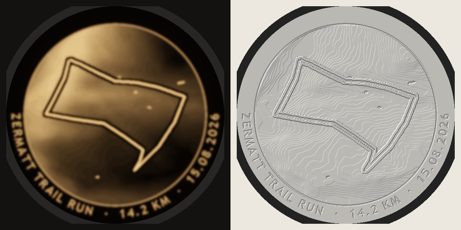</figure>
    <div class="text">
      <h3>3. Real height</h3>
      <dl><dt>Glows</dt><dd>The lowest ground</dd>
      <dt>Dark</dt><dd>The highest ground</dd>
      <dt>Off</dt><dd>The true terrain shape in miniature, with fine terraces from the layers</dd>
      <dt>Best for</dt><dd>When the daylight object matters more than the night picture</dd></dl>
      <p>The most honest model, and the softest picture: lit, it reads as a glow fading toward the peaks rather than as mountains.</p>
    </div>
  </div>

  <div class="recipe">
    <figure>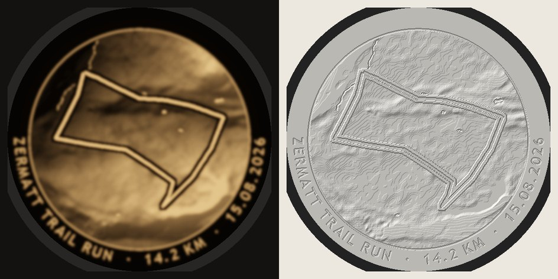</figure>
    <div class="text">
      <h3>4. Glowing peaks</h3>
      <dl><dt>Glows</dt><dd>The summits and glaciers</dd>
      <dt>Dark</dt><dd>The valleys</dd>
      <dt>Off</dt><dd>A textured relief</dd>
      <dt>Best for</dt><dd>Summit days and ski tours, an evening-glow mood</dd></dl>
      <p>The height turned around, so the high ground lights up like snow at dusk.</p>
    </div>
  </div>

  <div class="recipe">
    <figure>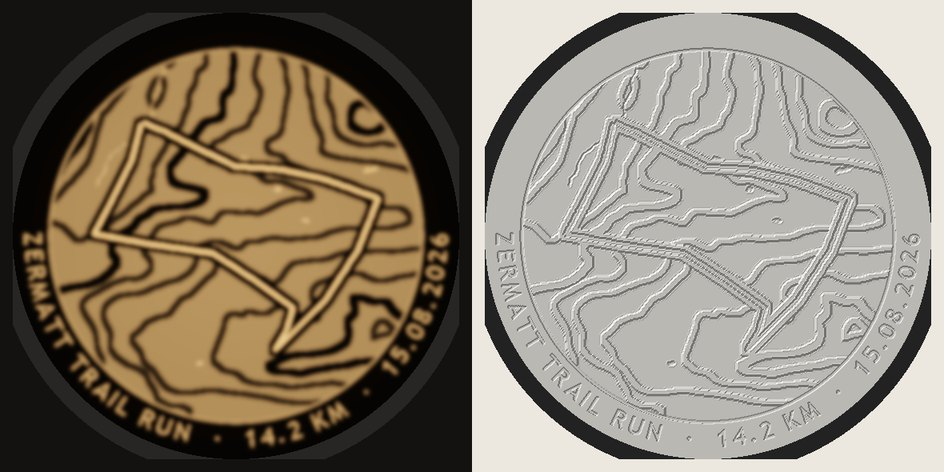</figure>
    <div class="text">
      <div class="tags"><span class="tag rec">Chosen for mountain and hill runs</span></div>
      <h3>5. Contour lines</h3>
      <dl><dt>Glows</dt><dd>Everything evenly, like a lampshade</dd>
      <dt>Dark</dt><dd>A contour line every 200 m, bolder every 1000 m</dd>
      <dt>Off</dt><dd>Raised contour lines, like a topographic map</dd>
      <dt>Best for</dt><dd>A graphic look that reads from across the room; gives the most light</dd></dl>
      <p>The tool would pick the spacing per order, so a gentle hill gets lines every 20 m and the Alps every 200 m.</p>
    </div>
  </div>

  <div class="recipe">
    <figure>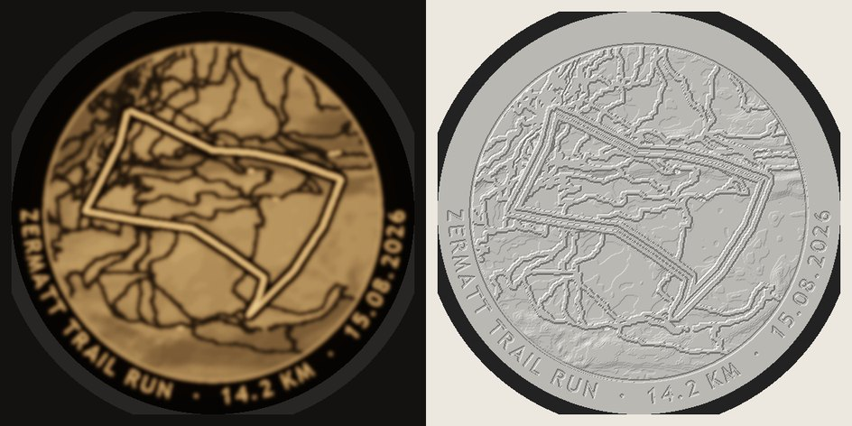</figure>
    <div class="text">
      <h3>6. Trail map</h3>
      <dl><dt>Glows</dt><dd>The ground, faintly shaded</dd>
      <dt>Dark</dt><dd>Trails, roads and railway lines</dd>
      <dt>Off</dt><dd>The raised path network</dd>
      <dt>Best for</dt><dd>Hikes where the paths around the route matter</dd></dl>
      <p>Reads as a map rather than a landscape. The route still wins because it is the only bright line.</p>
    </div>
  </div>

  <div class="recipe">
    <figure></figure>
    <div class="text">
      <div class="tags"><span class="tag rec">Chosen for city runs</span></div>
      <h3>7. City map</h3>
      <dl><dt>Glows</dt><dd>Squares and open ground, and the river brightest</dd>
      <dt>Dark</dt><dd>Streets, with buildings half dark</dd>
      <dt>Off</dt><dd>Raised streets and building blocks</dd>
      <dt>Best for</dt><dd>City runs and marathons, where the height says nothing</dd></dl>
      <p>Shown on the 5 km Zürich old town test loop. Buildings only work on maps this zoomed in.</p>
    </div>
  </div>
</section>

<section>
  <div class="stack">
    <h2>How much detail survives</h2>
    <p>The light spreads about half a millimetre inside the plastic, and the nozzle draws 0.4 mm lines. Together they blur anything finer than about 1 mm once the lid is lit. The three panels show the same spot of the Zermatt lid enlarged.</p>
  </div>
  <figure>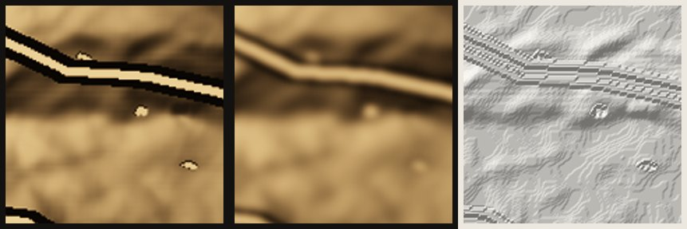<figcaption>The file · printed and lit · printed and switched off</figcaption></figure>
  <p>The lit print keeps the route, the dark edge and the bigger shapes. The small lakes fade to faint spots. Off, the layers show as fine terraces, like extra contour lines. That is fine at 0.08 mm layers and coarse at 0.2 mm.</p>
  <div class="tablewrap">
  <table>
    <thead><tr><th>Feature</th><th>Smallest that reads on the lid</th><th>Why</th></tr></thead>
    <tbody>
      <tr><td>Route</td><td>A 1.1 mm bright line with a 0.8 mm dark edge each side</td><td>A thinner edge melts into the glow. The first renders used 0.4 mm and lost it.</td></tr>
      <tr><td>Lakes, rivers</td><td>About 2 mm across</td><td>Smaller ones become a faint spot.</td></tr>
      <tr><td>Trails, streets</td><td>0.8 mm dark lines</td><td>Thinner is lost, and a dense network turns into a grey patch.</td></tr>
      <tr><td>Caption</td><td>Letters 3.5 mm tall, strokes 0.8 mm</td><td>Thinner glowing strokes blur shut.</td></tr>
      <tr><td>Buildings</td><td>Small city maps only</td><td>On a mountain map a house is under 1 mm.</td></tr>
      <tr><td>Terrain</td><td>Smoothed to about 1 mm</td><td>Finer bumps do not show when lit.</td></tr>
    </tbody>
  </table>
  </div>
</section>

<section>
  <div class="stack">
    <h2>Which side carries the relief</h2>
    <p>The light passes through the same thickness either way, so the lit picture is identical. The choice only changes how the lid looks switched off. Both print flat without supports.</p>
  </div>
  <div class="two">
    <div class="card"><h3>Relief on top</h3><p>As in every image above. Switched off, it is a white terrain relief that matches the posters, and you press the relief to switch the light on.</p></div>
    <div class="card"><h3>Smooth top</h3><p>The same print turned over, relief facing the light. Switched off, it is a plain white disc with the fine texture of the print plate. The map only appears when the light comes on, which makes a good gift moment.</p></div>
  </div>
</section>

<section>
  <div class="stack">
    <h2>What I would build</h2>
    <ul>
      <li><strong>Your two recipes:</strong> contour lines for mountain and hill runs, the city map for city runs, picked by height range per kilometre with an override in the order form.</li>
      <li><strong>One set of fixed rules for all of them:</strong> 0.6 to 3 mm thick, the route bright with a dark edge, lakes bright, the caption glowing in a dark band.</li>
      <li><strong>One white print per order,</strong> printed flat at 0.08 mm layers and solid all the way through, relief on top by default.</li>
      <li><strong>In the tool,</strong> the lid becomes a fourth output made from the same terrain and route data, with a recipe choice in place of the colour theme.</li>
    </ul>
  </div>
</section>

<section>
  <div class="test">
    <figure>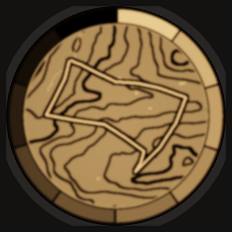</figure>
    <div class="stack">
      <h2>The first test print</h2>
      <p>The test lid carries the Zermatt contour map in the middle and ten segments around the edge, from 0.6 mm at the top going clockwise to 3.2 mm. On your light it answers three questions at once.</p>
      <ul>
        <li>How bright your LED gets through each thickness, which sets the real curve.</li>
        <li>Whether the LED shows as a hot spot in the middle.</li>
        <li>How the map and the route actually read.</li>
      </ul>
      <p>To size it I still need the light's diameter, the shape of its top edge, and whether the button is a push button or a touch sensor.</p>
    </div>
  </div>
</section>
</main>
